BUBERRY WORLDWIDE
At Buberry Worldwide, we are committed to advancing sustainable land management methods by providing accessible and verifiable knowledge to individuals and communities. Our focus is on creating innovative and competency-based learning resources that help people engage in the food system and benefit from it.
We believe that everyone should have the opportunity to learn about sustainable land management practices and how to implement them in their own communities. By providing accessible and engaging educational resources, we aim to empower individuals and communities to make informed decisions about their land use and contribute to a more sustainable future.
Through our data collection and analysis, we are able to better understand how to utilize public and private properties for food production and other resource-generating activities. By collaborating with local communities, we are able to create meaningful and impactful change in the food system.
Join us in our mission to promote sustainable land management and create a better future for all.
ABOUT:
At Buberry Worldwide, we are dedicated to promoting sustainable land management practices to create a better future for all. Our company was founded on the belief that we can make a positive impact on the environment by empowering individuals and communities to take action towards sustainability.
Our journey began when our founders Bu and Berry, witnessed the devastating effects of land degradation and unsustainable land use practices on local communities during their travels around the world. They became determined to make a difference by providing accessible and verifiable knowledge to people, so they could make informed decisions about their land use and contribute to a more sustainable future.

Today, Buberry Worldwide continues to uphold our mission by creating innovative and competency-based learning resources that help people engage in the food system and benefit from it. We collaborate with local communities, experts, and organizations to design and implement sustainable land management practices that promote environmental conservation, social equity, and economic development.
Our ultimate goal is to foster a world where people and nature can thrive together, and we believe that sustainable land management is a crucial step towards achieving this vision. Join us in our mission to promote sustainable land management and create a better future for all.
SERVICES:
Competency-Based Educational Platform
We are proud to offer a competency-based educational platform on Moodle LMS, designed to be gamified with experience points and tailored to different learning paths. Our team travels to experienced farmers and experts in the field to develop content and educational material, including video training, to provide a comprehensive learning experience. These experts also help validate the educational content and assist in building curriculae. Our platform offers a wide range of courses and modules covering topics such as regenerative agroforestry, sustainable land management, and more, providing accessible education for learners of all levels.
Click here to explore our educational platform.
Data Collection Services
We offer data collection services through crowdsourced data to provide better timing and knowledge of local fruit tree health and harvestability. Our data collection includes tree mapping, services mapping, producers, and markets, among other data points. With this information, we can provide valuable insights to help farmers and landowners make informed decisions about their land use and resource production.
Click here to learn more about our data collection services.
Blockchain-Verified Competencies and Game Tokens
Our third service involves providing blockchain-verified competencies and game tokens to participate in a digital economy backed by the resource production of the system. By completing our competency-based courses, learners can earn verified competencies and game tokens that can be used to access exclusive resources and participate in a digital economy that rewards sustainable land management practices. This system also provides greater transparency and accountability for resource production, benefiting farmers, landowners, and the environment.
 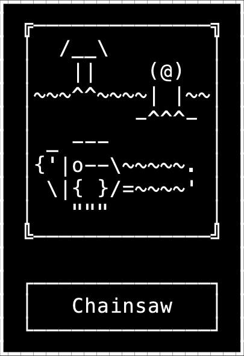
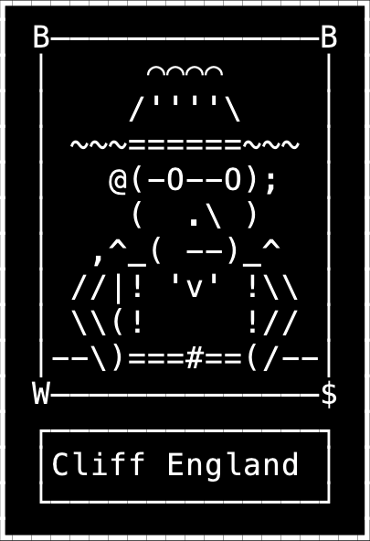
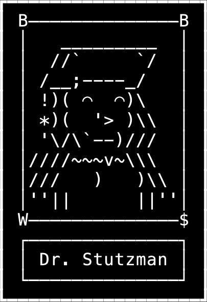
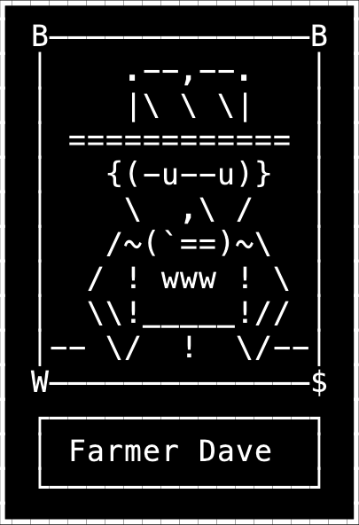
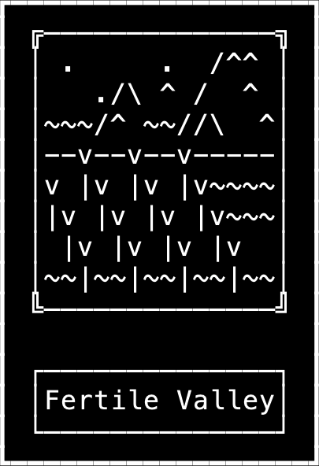
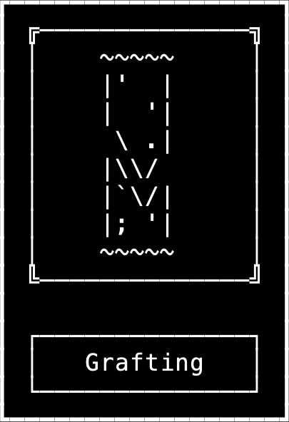
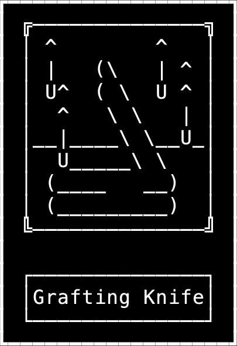
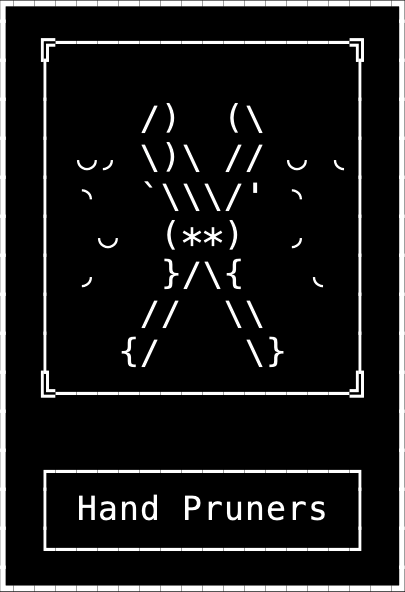
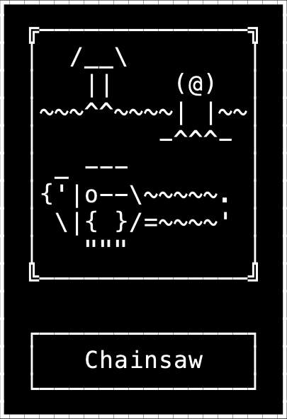
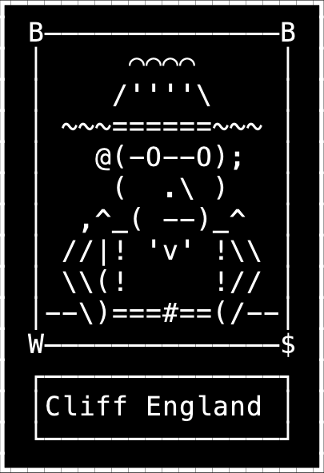
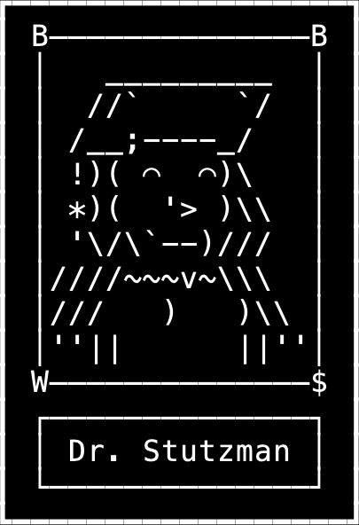
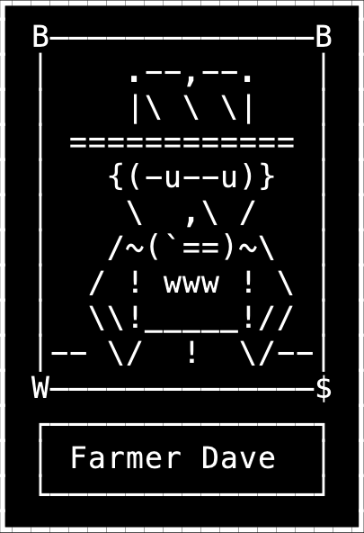
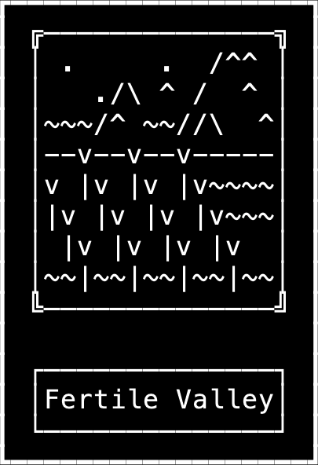
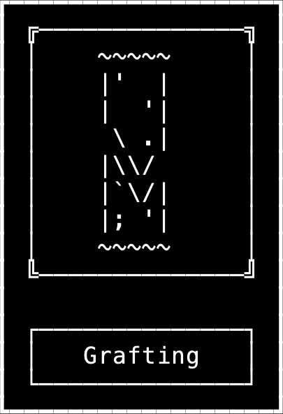
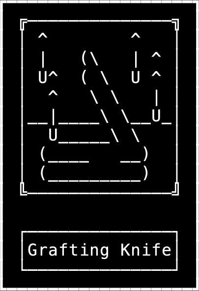
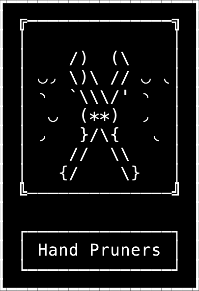